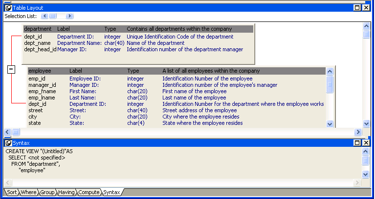
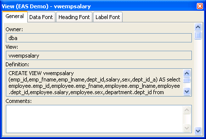
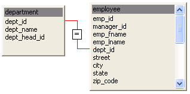
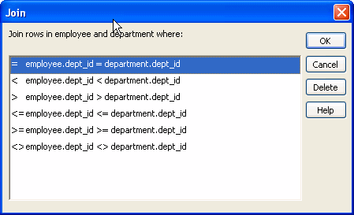

A database view gives a different (and usually limited) perspective of the data in one or more tables. Although you see existing database views listed in the Objects view, a database view does not physically exist in the database as a table does. Each time you select a database view and use the view's data, PowerBuilder executes a SQL SELECT statement to retrieve the data and creates the database view.
For more information about using database views, see your DBMS documentation.
You can define and manipulate database views in PowerBuilder. Typically you use database views for the following reasons:
In PowerBuilder, you can create single- or multiple-table database views. You can also use a database view when you define data to create a new database view.
You define, open, and manipulate database views in the View painter, which is similar to the SQL Select painter. For more information about the SQL Select painter, see "Selecting a data source ".
 Updating database views Some database views are logically updatable and others are
not. Some DBMSs do not allow any updating of views. For the rules
your DBMS follows, see your DBMS documentation.
Updating database views Some database views are logically updatable and others are
not. Some DBMSs do not allow any updating of views. For the rules
your DBMS follows, see your DBMS documentation.
 To open a database view:
To open a database view:
In the Objects view, expand the list of Views for your database.
Highlight the view you want to open and select Add To Layout from the pop-up menu, or drag the view's icon to the Object Layout view.
 To create a database view:
To create a database view:
Click the Create View button, or select View or New View from the Object>Insert or pop-up menu.
The Select Tables dialog box displays, listing all tables and views that you can access in the database.
Select the tables and views from which you will create the view by doing one of the following:
Representations of the selected tables and views display in the View painter workspace:

Select the columns to include in the view and include computed columns as needed.
Join the tables if there is more than one table in the view.
For information, see "Joining tables".
Specify criteria to limit rows retrieved (Where tab), group retrieved rows (Group tab), and limit the retrieved groups (Having tab), if appropriate.
For information, see the section on using the SQL Select painter in "Selecting a data source ". The View painter and the SQL Select painter are similar.
When you have completed the view, click the Return button.
Name the view.
Include view or some other identifier in the view's name so that you will be able to distinguish it from a table in the Select Tables dialog box.
Click the Create button.
PowerBuilder generates a CREATE VIEW statement and submits it to the DBMS. The view definition is created in the database. You return to the Database painter workspace with the new view displayed in the workspace.
You can display the SQL statement that defines a database view. How you do it depends on whether you are creating a new view in the View painter or want to look at the definition of an existing view.
 To display the SQL statement
from the View painter:
To display the SQL statement
from the View painter:
Select the Syntax tab in the View painter.
PowerBuilder displays the SQL it is generating. The display is updated each time you change the view.
 To display the SQL statement
from the Database painter:
To display the SQL statement
from the Database painter:
Highlight the name of the database view in the Objects view and select Properties from the pop-up menu, or drag the view's icon to the Object Details view.
The completed SELECT statement used to create the database view displays in the Definition field on the General page:

 View dialog box is read-only You cannot alter the view definition in the Object Details
view. To alter a view, drop it and create another view.
View dialog box is read-only You cannot alter the view definition in the Object Details
view. To alter a view, drop it and create another view.
If the database view contains more than one table, you should join the tables on their common columns. When the View painter is first opened for a database view containing more than one table, PowerBuilder makes its best guess as to the join columns, as follows:
 To join tables:
To join tables:
Click the Join button.
Click the columns on which you want to join the tables.
In the following screen, the Employee and Department tables are joined on the dept_id column:

To create a join other than the equality join, click the join representation in the workspace.
The Join dialog box displays:

Select the join operator you want from the Join dialog box.
If your DBMS supports outer joins, outer join options also display in the Join dialog box. For example, in the preceding dialog box (which uses the Employee and Department tables), you can choose to include rows from the Employee table where there are no matching departments, or rows from the Department table where there are no matching employees.
For more about outer joins, see "Using ANSI outer joins".
Dropping a database view removes its definition from the database.
 To drop a view:
To drop a view:
In the Objects view, select the database view you want to drop.
Click the Drop Object button or select Drop View from the pop-up menu.
PowerBuilder prompts you to confirm the drop, then generates a DROP VIEW statement and submits it to the DBMS.
You can export the syntax for a view to the log. This feature is useful when you want to create a backup definition of the view before you alter it or when you want to create the same view in another DBMS.
 To export the syntax of an existing view to a
log:
To export the syntax of an existing view to a
log:
Select the view in the painter workspace.
Select Export Syntax from the Object menu or the pop-up menu.
For more information about the log, see "Logging your work".